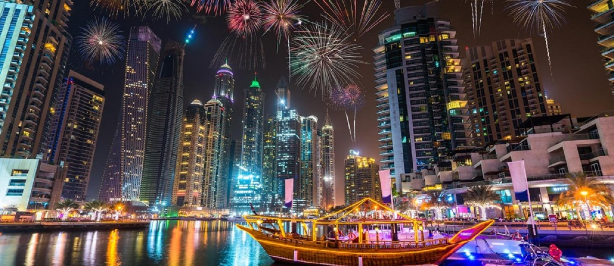
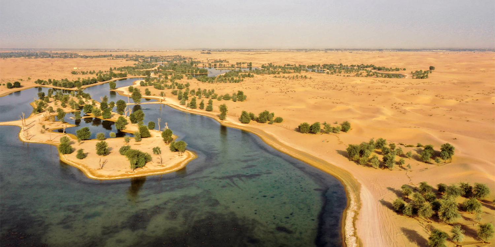
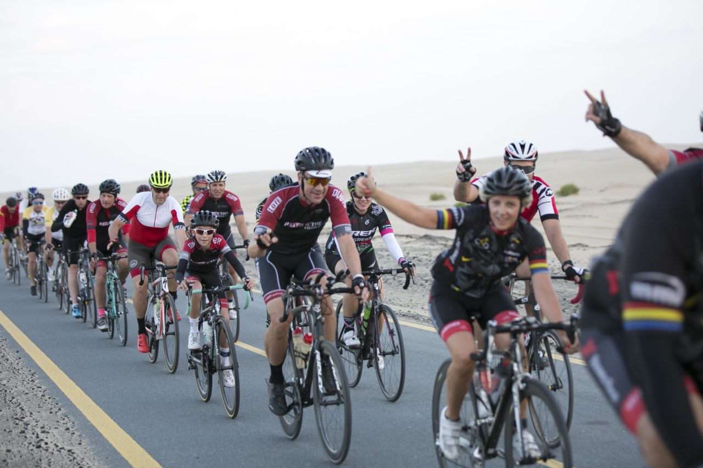
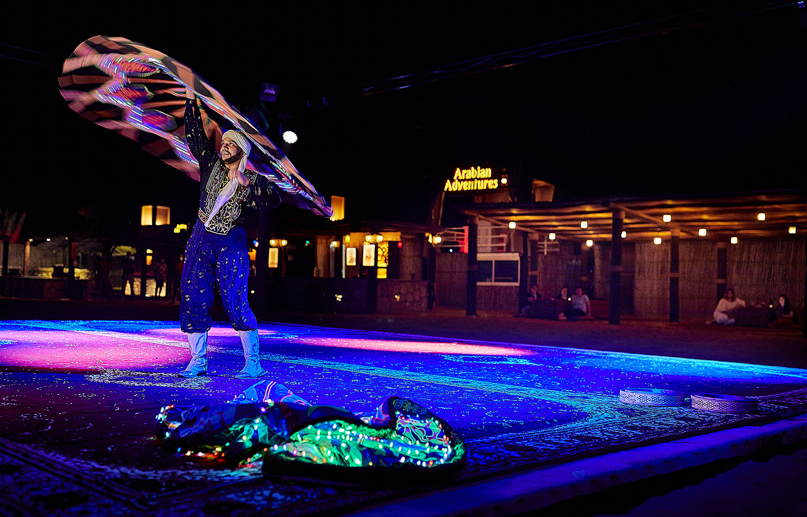

Head to the buzzing Kite Beach in Jumeirah, where activity-loving families and Dubai's hippest crowds go to cool off. A well-kept strip with plenty of space, there are a host of sports on offer including kitesurfing, beach football, beach tennis and volleyball, plus a skatepark and kids' play facilities. To refuel, the food truck-turned-beach-shack Salt serves up shakes and sliders so good, it attracts citywide food lovers.
rom high-end hotels and beach clubs to decadent dining, there's plenty for Dubai's sun-seekers to enjoy on this magnificent island. Whether you see it from a plane, when skydiving, or while researching your dream trip online, Dubai’s iconic palm-shaped island is extraordinary. This engineering marvel is synonymous with Dubai’s efforts to consistently evolve and make dreams come true. The neighbourhood offers an urban mix of island residences, glamorous five-star resorts, on-trend restaurants and chic beach clubs. Whatever your scene, you’re sure to find it here. Get sun-soaked at the family-friendly Riva Beach Club or W Dubai’s WET Deck while enjoying top tunes, refreshing poolside dining and five-star facilities. There are many private hotel beaches along The Palm that can be accessed with a day pass, though its waters offer aquatic adventures for everyone. Charter a luxury yacht and cruise along the vast coastline, or rev up the excitement with a speedboat ride and wakeboarding trips. In between the island's ‘fronds’, and along the trunk, the waters are calmer, making it a popular choice for kayaking and paddle-boarding. .
The five-star Atlantis, The Palm resort, located on the outer crescent, is a popular stop. The grand property is home to world-class restaurants by the likes of Nobu, Giorgio Locatelli and Gordon Ramsay, as well a waterpark, giant aquarium and more. Step outside to the Palm Jumeirah boardwalk, which comes alive at dusk with tourists and residents all vying for the perfect selfie. Sit by the rocks or grab a bite at a nearby food truck, and watch the sky ablaze with colour. Bicycles are also available to rent, allowing you to pedal along the shoreline and take in panoramic vistas of the Arabian Gulf. Looking for more to explore? Palm Jumeirah is home to the Nakheel Mall and The Pointe, both housing plenty of branded stores and family-friendly attractions. For relaxation lovers, a gentle walk along The Pointe's 1.5km promenade is a tempting option, affording the best waterside views of Atlantis in the distance. Getting there: If using the Dubai Metro, alight at either the Jumeirah Lakes Towers or Dubai Marina station and then take the Dubai Tram to the Palm Jumeirah stop. A short walk leads you to the Gateway station, which is the starting point for the Palm Jumeirah Monorail that runs along the main trunk of the island. Alternatively, take a water taxi to the Waldorf Astoria Palm Jumeirah.
Known for its sustainability initiatives, Al Marmoom is abundant with native wildlife such as gazelles, camels and birds. Once considered globally extinct, the Arabian oryx has successfully been saved after breeding programmes and re-introductions in the UAE, including at Al Marmoom. To catch a glimpse of the elusive oryx, head over to their feeding stations around the area. If birdwatching is your passion, visit the nearby Al Qudra lakes, home to 170 bird species including some endangered kinds like the Steppe Eagle and the Asian Houbara. The calming waters of Al Qudra lakes are also a welcome spot for nature-lovers to enjoy a picnic. Early risers can head over at dawn to catch a glorious desert sunrise.
Al Qudra Cycle Track
l Qudra Cycling Track is a popular destination among Dubai’s adventure seekers and fitness enthusiasts. With 86km of track and amazing views of the desert, you might catch a glimpse of local wildlife – including the Arabian oryx. The track is popular with both professional and novice riders alike, and is frequented by both individuals and groups of friends.
Bike riding and rental in Al Qudra, Dubai
The track is also utilised by weekly cycling clubs, world-class athletes, and leisure riders visiting Dubai. Some say that the best time to ride is at sunrise, because the views and feeling of the morning breeze are unparalleled – but the sunsets are just as beautiful. Ensure you plan ahead, as this area has few taxis and much of the track is not illuminated after dark. The Trek UAE bike shop, located at the end of Al Qudra Road, is a great place to rent your bike. Part of the track has road access for cars, but most of the track is for cyclists. Additionally, the path is equipped with rest stations along the way that offer benches and shade. You’ll also find restrooms located adjacent to Trek UAE and where Bab Al Shams Road meets Al Qudra.
To also become chief of the online automobile industry as we continuously evolve with the growing market trends for cars. We aim to ensure every expectation is exceeded through our extensive choice of listed cars & our dedicated fleet of vehicle carriers- offering a safe, fast & reliable delivery of your vehicle- thereby setting higher standards in the online & offline world.
Arabian Adventures
There may be no better way to discover Dubai than with Arabian Adventures. The tour company does all the work while you sit back and enjoy the view. With more than 63 adventure options, you’ll have no problem taking in the sights of the city through tours encompassing everything from the sands to the skyline. The Desert Safari experience takes you on a wild ride through the dunes with an authentic Arabic dinner to indulge in afterwards. With their Dubai City Tour, you can travel through time as you explore the Gold and Spice Souk and Dubai Creek. They can arrange for you to tour the Jumeirah Mosque and soak in the views from the top of Burj Khalifa too. And you can even sail along the coast with their Dhow Cruise excursion. With Arabian Adventures you choose which breathtaking view of Dubai you want. Planning for a special occasion? The tour company can also plan bespoke events for birthdays, anniversaries and Valentine's Day.
Skydive Dubai
Experience a breathtaking free-fall and parachute experience with Skydive Dubai. Take the leap above the iconic Palm Jumeirah or over the Arabian desert and see the emirate from an entirely different perspective. If you have no experience, you don’t need to worry. The instructors will guide you through the whole process including a demonstration before even setting foot on a plane. Both the skydive locations in Dubai are world-renowned, with the best qualified instructors to gently guide you back on to the ground. With some experience you can explore advanced options like tandem skydiving, solo skydiving and the flight school. The dedicated flight school teaches you multiple forms like freefly, canopy, formation, wingsuit coaching and free-load organising. Take home the experience too, with a video of your skydive thanks to the talented videographers at Skydive Dubai.
The Dubai Fountain Marvel at Dubai's record-breaking dancing water fountains
Witness the tallest performing fountain in the world during your visit to Downtown Dubai. The Dubai Fountain offers a once-in-a-lifetime opportunity to immerse yourself in a captivating water, music and light experience. Submerged within the 30-acre Burj Lake, at the foot of The Dubai Mall, powerful water jets are laid out strategically over an area the length of two football pitches. The fountain jets up to 22,000 gallons of water as high as 140m in the air at any one time. How can you experience The Dubai Fountain? The fountains come to life every 30 minutes from 6pm, daily. The colourful, illuminated jets sways in time to a range of melodies, which will leave you spellbound. Some popular tracks include Michael Jackson's Thriller, Andrea Bocelli and Sarah Brightman's Time to Say Goodbye, and Power by Korean pop band EXO. Located at the foot of the Burj Khalifa, The Dubai Fountain Boardwalk allows visitors to get even closer to the spectacle, strolling the 272m floating platform – just nine metres from the fountains. You can experience this wonder even closer with the Dubai Fountain Lake Ride, setting sail on the lake itself during the water show. They’re truly the best seats in the house.